Example
Purpose of this page is to give a practical example on how to use the mod. All moding will be done with SSEEdit (TES5Edit would also work).
Papyrus scripts will be compiled using provided build scripts, so it is not required to download additional script. Basically, all you need to create this mod, is to have xEdit and working Unforgiving Devices.
So, for purpose of the example, our goal will be following to create following devices
- Ponygirl armbinder - Device will fastly repair itself if wearer doesn't move
- Ponygirl anal plug - Anal plug which whose vibration strength will change based on distance traveled. The more the wearer moves, the more will plug vibrate to reward its victim. But it will also slowly loose durability when moving. But only if actor is not belted
- Ponygirl boots - Boots which will slowly reduce wearers health if they don't move
Getting started
Everytime we will be creating new device, we will use new existing devices to make our job easier. For that reason, lets open up the xEdit and select both UnforgivingDevices.esp and all DeviousDevices .esm modules (assests, integration, expansion)
Then lets find a device which we will use for our devices. Lets use following devices
- Ponygirl armbinder - Black Ebonite armbinder
- Ponygirl anal plug -
- Ponygirl boots - Black ebonite pony boots
For now lets only copy Inventory Devices. Theese are the devices which have the name. So we can easily find the required device by name.
After finding the device, right click it and select "Copy as new record into...". Rename the editorID so it is more clear what device it is.
After that, select "(new file).esp", and the one without ESM flag. This will copy our device to our new mod. Lets new our new mod "Unforgiving Devices - Example"
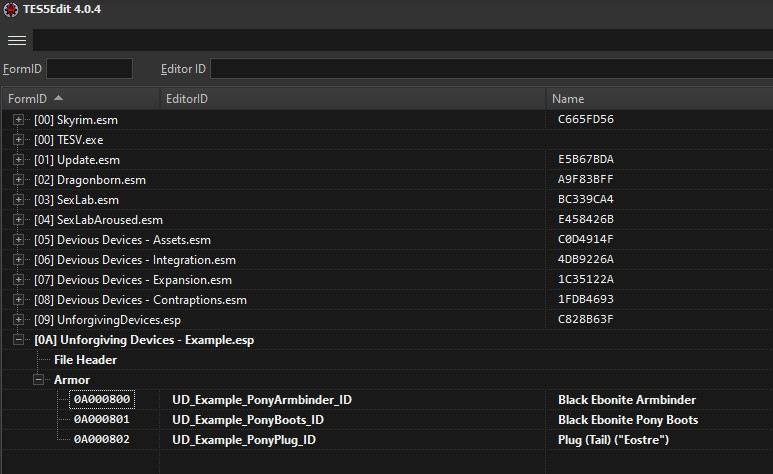
Now we need to also copy the render devices. Easiest way will be to just open our copied device, and check property deviceRendered on script zadequipscript. So lets
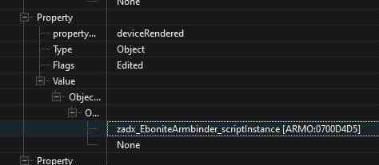
After that, we can hold Right Ctrl and click on the editorID of render device. This will open the form with the render device. After it opens, just do the same thing as with Inventory devices.
If you followed the steps correctly, you should now have something like this:
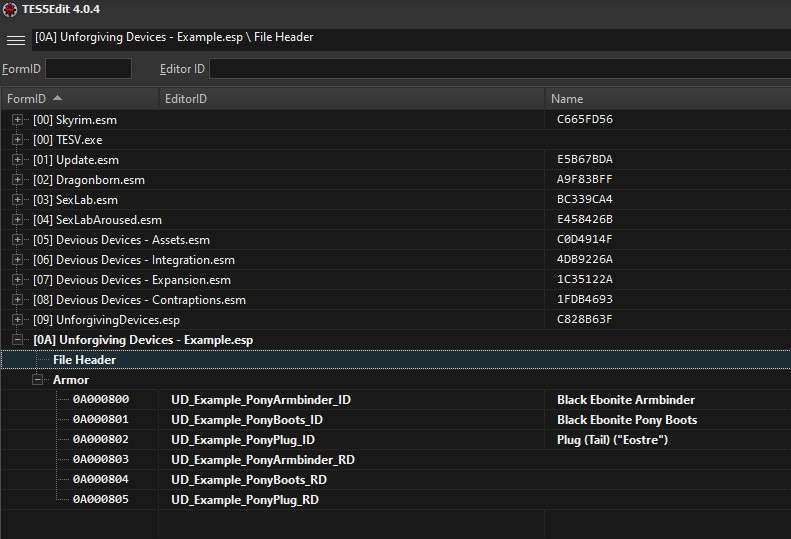
Now we need to update properties so they are linked to our new devices. Open every single of the device and change properties deviceInventory and deviceRendered.
The said properties have to be linked to the forms we just created. For example, the created UD_Example_PonyArmbinder_ID should have the properties updates like this
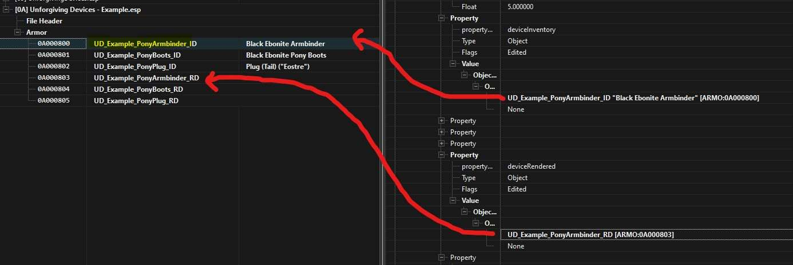
This have to be done for all 3 inventory devices. After that save the plugin with Ctrl+S so we don't loose our progress in case of some unexpected issue.
Now we can edit the devices to be more in tought with our idea. We are just going to rename tham as otherwise this example will be too long.
I will only say that if you want to change the textures or 3D of device, you can do it by editing render script.
Devices can be renamed by editing field "FULL - Name" on the form. It is under the script so you have to scroll a little.
After it is renamed, our mod looks like this
Patching devices
Till now this had nothing to do with Unforgiving Devices, and if you want to create new Devious Devices, you will most likely use exact same approach.
Now we need to patch our device so it works correctly with UD. but before we do it, we will first have to add Unforgiving Devices as master to our mod.
Right click our mod and select "Add master". Then select UnforigingDevices.esp
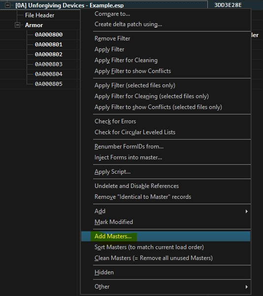
Patching time. First we have to get the patching script. The script is not in the installed mod, but in the fomod. So oyu have to open the mod installer.
The patching scripts are in folder dev/xEdit. The scripts have to be copied to "Edit Scripts" folder, which will be in folder that you placed xEdit in. Now before we start the patch, its good idea to save our mod.
Click on our mod with right click and select "Apply script...". In followup window, select "UD_PatchingScript" script from "script" dropdown menu, and click on Ok.
If all went ok, following text should show up in Messages
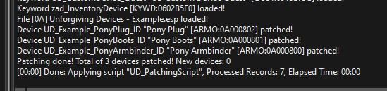
Check if patched devices seems ok. They should not shows error in any of the properties.
Devices customization
Now that our devices are usable in UD, we can start to edit them to our liking. I recommend to check documentation first, and mainly the Customization groupd of UD_CustomDevice_RenderScript
Most, if not all furthere customization will be only done on Render device, as that is where all magick happens. It is important to note all patched devices are processed differently in UD then the ones that are unpatched.
If you for example change some setting of the device while it still have Patched keyword, the value will be most liekly changed when device is locked on.
Because off that, lets remove Patching keywords from our Pony Armbinder device, so we have at least one device to customize.
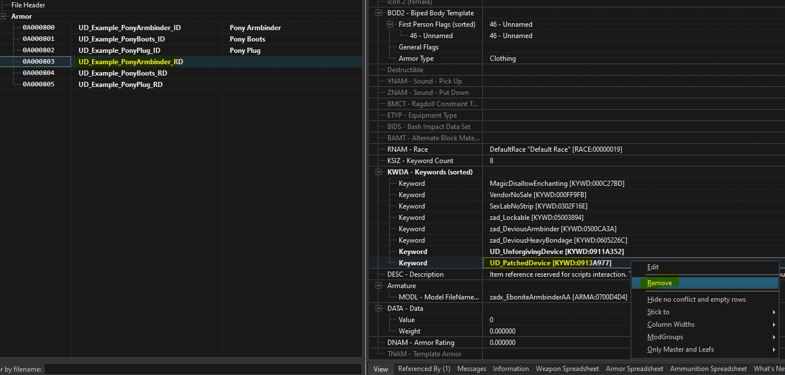
Lets do following changes to our Pony Armbinder
- UD_durability_damage_base -> 0.75 = This way device will be little harder, but not too much
- UD_base_stat_drain -> 5 = Struggling will last longer as less stats will be drained
- UD_ResistPhysical -> 0.2 = Device will have physical resistence of 20%
- UD_ResistMagicka -> 2.0 = Device will regain durability if actor tried to struggle using magick
- UD_StruggleCritChance -> 45 = Big (45%) chance of crit on every second of minigame
- UD_StruggleCritDuration -> 0.7 = Duration of crit is only 0.7 seconds
- UD_StruggleCritMul -> 2.5 = Crit multiplier is 2.5x
- UD_Level -> -2 = Device will have similiar level as its wearer
Lets also add UD_PatchHard keyword to other 2 devices, so they are little harder to escape
Now that all of that is done, we can start the scripting, which will give our devies their unique behaviour
Scripting
First, save and close the xEdit so our mod esp is created. Create new mod if using ModOrganizer and place our esp in to it. Create new folder Script in it. Next create folder Source inside the folder Scripts.
Lastly copy following files
- BUILD_ALL.bat from Scripts folder in Unforgiving Devices installed mod (1.main/Scripts in fomod zip). Copy it to our Scripts folder (but not the Source folder!)
- RenderDeviceTemplate.psc from docs folder to our Scripts/Source folder
Now, copy the RenderDeviceTemplate.psc 2 times, so you have exactly 3 copies of the script
Rename them so they are named as follows
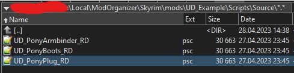
Now we have to edit the templates so it works. For now all we need to do is to edit ;/DEVICE SCRIPT NAME/; so it says correct name, and ;/PARENT SCRIPT NAME/; which says the name of parent script.
- ;/DEVICE SCRIPT NAME/; - Name of the script file. So in our example, it will be UD_PonyArmbinder_RD, etc...
- ;/PARENT SCRIPT NAME/; - Parent script. For Pony Armbinder, we will use UD_CustomHeavyBondage_RenderScript. For Pony Boots, we will use UD_CustomBoots_RenderScript. For Pony Plug, we will use UD_CustomPlug_RenderScript
After changing all files correctly, we can try to compile them.
Open the Source folder, and run BUILD_ALL.bat. Note that it first needs to download all required sources, so it depending on your connection it might take a while.
Good new is that it only needs to download once.
After that, you can compile offline if you want to.
If you did everything ok, the BUILD_ALL.bat should show something like this
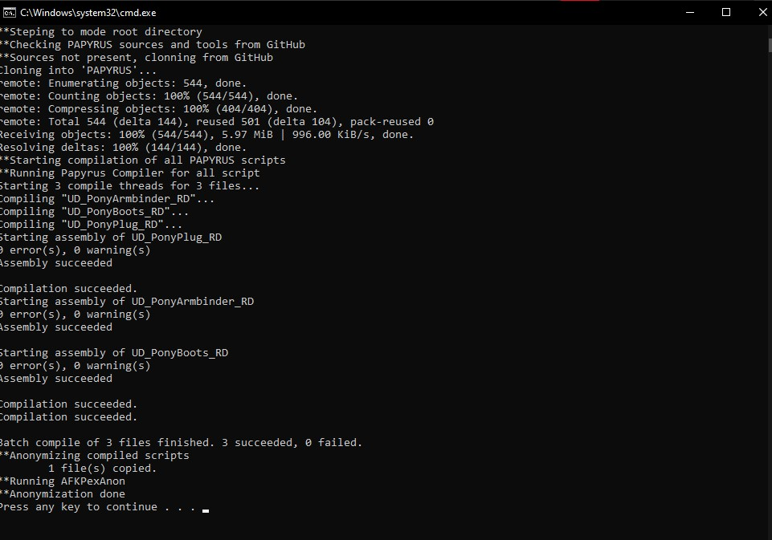
Now, we have to link our new scripts in xEdit to our devices. So lets again open up the xEdit and our mod.
Go to all the render devices, and replace existing ScriptName with our new script
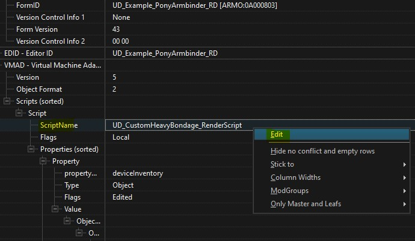
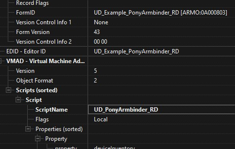
Do it for all of our devices. After its done, we can finaly get to scripting.
First lets edit UD_DeviceType in function InitPost. For armbinder, lets change the UD_DeviceType to "Pony Armbinder". For other scripts, we will do the similiar
Pony Armbinder
As said on beginning, we want this device to be repairing itself while actor stands in one place. Following is snippet from the code that does exactly that.
You can see that only functions InitPost, OnUpdatePost and GetAiPriority were edited. New Deactivation minigame is also added to demonstrate how to add simple minigame.
Scriptname UD_PonyArmbinder_RD extends UD_CustomHeavyBondage_RenderScript
import UnforgivingDevicesMain
Float _lastX = 0.0
Float _lastY = 0.0
Bool _deactivationMinigameON = false
Float _DeactivationProgress = 0.0
;our new minigame
bool Function _DeactivationMinigame(Bool abSilent = False)
if !minigamePrecheck(abSilent)
return False
endif
if _DeactivationProgress >= 100.0
if !abSilent
UDmain.Print(GetDeviceName()+" is already deactivated!")
endif
return false
endif
;reset minigame values, have to be always called before we do some changes
resetMinigameValues()
;minigame will not damage device
setMinigameOffensiveVar(False,0.0,0.0,True)
;minigame willdrain 100% of base stat drain + 10% of actor stamina per second
setMinigameWearerVar(True,UD_base_stat_drain + getMaxActorValue(getWearer(),"Stamina",0.1))
;minigame will cause exhaustion with only 50% duration
setMinigameEffectVar(True,True,0.5)
;toggle on widget, and set it to be automatically updated on every tick. Set color to 0x12345678. No icon provided in this case
setMinigameWidgetVar(True, False, True, 0x12345678, -1, -1)
;set minimum stat
setMinigameMinStats(0.8)
;check minigame and start it if its ok
if minigamePostcheck(abSilent)
;set our _deactivationMinigameON flag on, so we can use it in other override functions
_deactivationMinigameON = True
minigame()
_deactivationMinigameON = False
return true
endif
return false
EndFunction
Function InitPost()
parent.InitPost()
UD_DeviceType = "Device type"
UD_ActiveEffectName = "Active effect name"
_lastX = GetWearer().GetPositionX()
_lastY = GetWearer().GetPositionY()
EndFunction
...
Function OnMinigameTick(Float abUpdateTime)
if _DeactivationMinigameON
;increase progress by 5/s
_DeactivationProgress += 5.0*abUpdateTime
;stop minigame if progress is full
if _DeactivationProgress >= 100.0
StopMinigame()
endif
else
parent.OnMinigameTick(abUpdateTime)
endif
EndFunction
...
Function OnUpdatePost(float afTimePassed)
parent.OnUpdatePost(afTimePassed)
;only check if device is not deactivated
if _DeactivationProgress < 100.0
Actor loc_actor = GetWearer()
;lets calculate the avarage speed from last update per minute
float loc_distance = _CalcTraveledDistance()
float loc_avaragespeed = loc_distance/(UDCDmain.UD_UpdateTime)
;if wearer is in minigame, count it as movement
if UDCDmain.ActorInMinigame(loc_actor)
loc_avaragespeed += 100
endif
;print info to console, so we can calibrate the value
float loc_repairamount = fRange((20/loc_avaragespeed)*UDCDmain.UD_UpdateTime,0.0,10.0)
GInfo(self+"::Repaired by ="+loc_repairamount)
RefillDurability(loc_repairamount)
_lastX = loc_actor.GetPositionX()
_lastY = loc_actor.GetPositionY()
endif
EndFunction
Float Function _CalcTraveledDistance()
Actor loc_actor = GetWearer()
if loc_actor.IsOnMount()
return 0.0
endif
Float loc_x = loc_actor.GetPositionX()
Float loc_y = loc_actor.GetPositionY()
Float loc_Dx = _lastX - loc_x
Float loc_Dy = _lastY - loc_Y
return Math.sqrt(loc_Dx*loc_Dx + loc_Dy*loc_Dy)
EndFunction
...
Function onDeviceMenuInitPost(bool[] aaControl)
parent.onDeviceMenuInitPost(aaControl)
aaControl[16] = False ;disable filder
UDCDmain.currentDeviceMenu_allowSpecialMenu = True ;always show special menu. Option will only show if atleast one of the currentDeviceMenu_switch is true
UDCDmain.currentDeviceMenu_switch1 = True ;always show deactivation option
EndFunction
...
string Function addInfoString(string asInfo = "")
String loc_info = parent.addInfoString(asInfo)
;add info about deactionation to details
loc_info += "Deactivation= " + Round(_DeactivationProgress*100) + "\n"
return loc_info
EndFunction
...
Function updateWidget(bool abForce = false)
if _DeactivationMinigameON
;update widget with our value
SetWidgetVal(_DeactivationProgress/100.0)
else
parent.updateWidget(abForce)
endif
EndFunction
...
bool Function proccesSpecialMenu(int aiMsgChoice)
if aiMsgChoice == 0
;start deactivation minigame, and show messages
return _DeactivationMinigame(False)
else
return false
endif
EndFunction
...
Int Function GetAiPriority()
;hight priority
return 90
EndFunction
Pony Boots
This this will damage actors health if the actors doesn't move. This is again done by editing some function in the script
Scriptname UD_PonyBoots_RD extends UD_CustomBoots_RenderScript
import UnforgivingDevicesMain
Float _lastX = 0.0
Float _lastY = 0.0
Function InitPost()
parent.InitPost()
UD_DeviceType = "Pony Boots"
UD_ActiveEffectName = "Active effect name"
_lastX = GetWearer().GetPositionX()
_lastY = GetWearer().GetPositionY()
EndFunction
Function OnUpdatePost(float afTimePassed)
parent.OnUpdatePost(afTimePassed)
Actor loc_actor = GetWearer()
;lets calculate the avarage speed from last update per minute
float loc_distance = _CalcTraveledDistance()
float loc_avaragespeed = loc_distance/(UDCDMain.UD_UpdateTime)
;if wearer is in minigame, count it as movement
if !UDCDmain.ActorInMinigame(loc_actor) && loc_avaragespeed < 150
float loc_damage = 2.5*UDCDMain.UD_UpdateTime
;damage health only if actor have atleast 20 health
if (GetWearer().GetAV("Health")) > (loc_damage - 20)
GetWearer().DamageAV("Health",loc_damage)
else
GetWearer().ForceActorValue("Health",20)
endif
endif
_lastX = loc_actor.GetPositionX()
_lastY = loc_actor.GetPositionY()
EndFunction
Int Function GetAiPriority()
;parent priority + 10
return parent.GetAiPriority() + 10
EndFunction
Pony plug
Lastly, the plug should vibrate the more the actor moves. This is yet again done by editing some of the template functions
Scriptname UD_PonyPlug_RD extends UD_CustomPlug_RenderScript
import UnforgivingDevicesMain
Float _lastX = 0.0
Float _lastY = 0.0
Function InitPost()
parent.InitPost()
;device type
UD_DeviceType = "Pony Plug"
;can't activate
UD_ActiveEffectName = ""
;infinite vibration duration
UD_VibDuration = -1
;vibration strength
UD_VibStrength = 10
;normal edging mode -> no edging
UD_EdgingMode = 0
;device cant be struggled from
UD_durability_damage_base = 0.0
EndFunction
...
bool Function canBeActivated()
;device cant be activated
return False
EndFunction
...
Function OnUpdatePost(float afTimePassed)
parent.OnUpdatePost(afTimePassed)
Actor loc_actor = GetWearer()
;lets calculate the avarage speed from last update per minute
float loc_distance = _CalcTraveledDistance()
float loc_avaragespeed = fRange(loc_distance/(UDCDmain.UD_UpdateTime),0.0,300.0)
;if wearer is in minigame, count it as movement
if UDCDmain.ActorInMinigame(loc_actor)
loc_avaragespeed += 100
endif
;print info to console, so we can calibrate the value
int loc_newstrength = iRange(Round(loc_avaragespeed/2.0),10,100)
if loc_newstrength
GInfo(self+"::Chenging plug strength to ="+loc_newstrength)
ForceStrength(loc_newstrength)
endif
if loc_avaragespeed > 25.0
float loc_dmg = (loc_avaragespeed/200.0)*UDCDmain.UD_UpdateTime
GInfo(self+"::Plug damaged by ="+loc_dmg)
decreaseDurabilityAndCheckUnlock(loc_dmg,0.0,false)
else
refillDurability(0.5*UDCDmain.UD_UpdateTime)
endif
_lastX = loc_actor.GetPositionX()
_lastY = loc_actor.GetPositionY()
EndFunction
;function which will get us the traveled distance
Float Function _CalcTraveledDistance()
Actor loc_actor = GetWearer()
if loc_actor.IsOnMount()
return 0.0
endif
Float loc_x = loc_actor.GetPositionX()
Float loc_y = loc_actor.GetPositionY()
Float loc_Dx = _lastX - loc_x
Float loc_Dy = _lastY - loc_Y
return Math.sqrt(loc_Dx*loc_Dx + loc_Dy*loc_Dy)
EndFunction
...
Int Function GetAiPriority()
return 0
EndFunction
Making patch quest
Now that our devices are done, we can do one last thing, and that is to add them as new abadon suit. This means that if actor consumes concetrated black goo, or equips abadon plug, these devices can appear
Lets use the existing PatchTemple.psc which is in docs folder, and rename it to UD_Example_PatchScript.psc. Next we will edit the script in following way
Scriptname UD_Example_PatchScript extends UD_PatchInit
import UnforgivingDevicesMain
Armor Property PonyArmbinder auto
Armor Property PonyBoots auto
Armor Property PonyPlug auto
;called when one of the suits was choosen to be locked on
Function EquipSuit(Actor akActor,String asEventName)
;wait for menu to close before we lock the devices
Utility.wait(0.01)
;disable actor, so they cant move while devices are locked on
UDmain.UDCDmain.DisableActor(akActor)
;only if the event is UD_Patch_Example_Pony
if asEventName == "UD_Patch_Example_Pony"
libs.lockdevice(akActor,PonyArmbinder)
libs.lockdevice(akActor,PonyBoots)
libs.lockdevice(akActor,PonyPlug)
endif
;enable actor
UDmain.UDCDmain.EnableActor(akActor)
EndFunction
After that, we make new script, and add our script to it. We will then fill all relevant properties
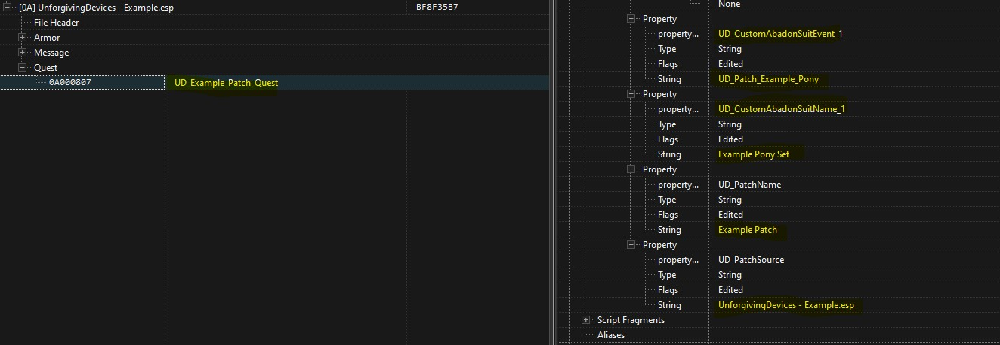
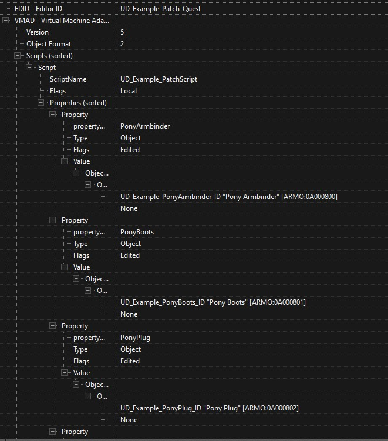